ui-polish: макет | результат
Chromium · DPR2. Слева макет, справа игра. Числа и карты отличаются по состоянию партии.
1. Новое подтверждение партии, дерево/латунь, низ телефона
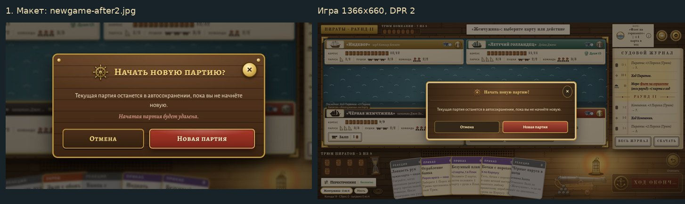
2. Пергамент карты, цвет типа, бочка, действия и красная причина отказа
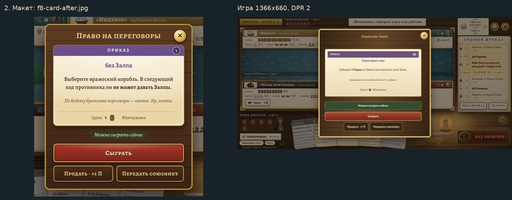
3. Золотое окно Легенды
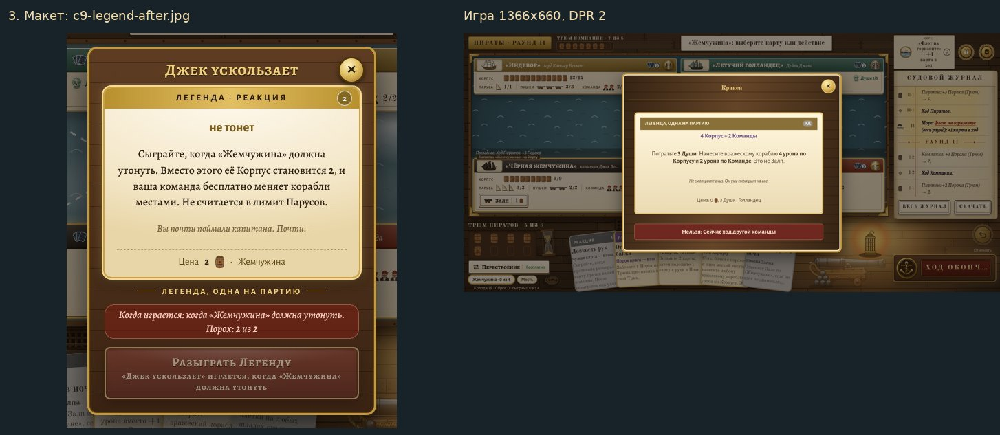
4. Родительный падеж сброса и пустое место карты
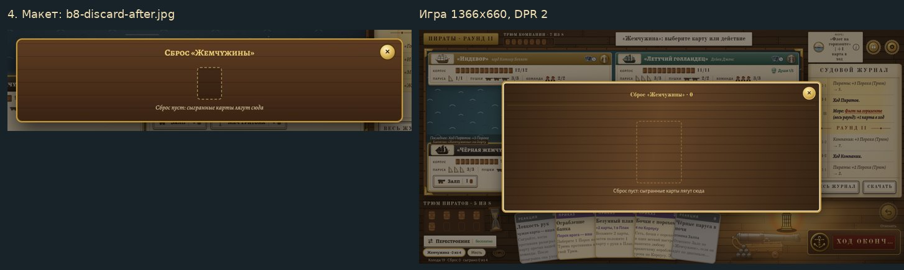
5. Статическая маска лавы Мести только под текстовыми блоками на ноутбуке
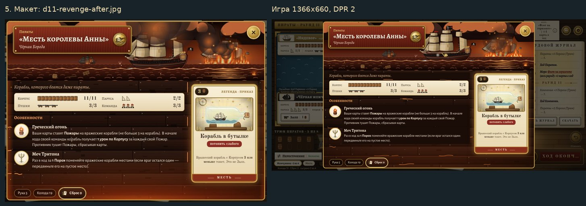
6. Души Голландца одной текстовой строкой
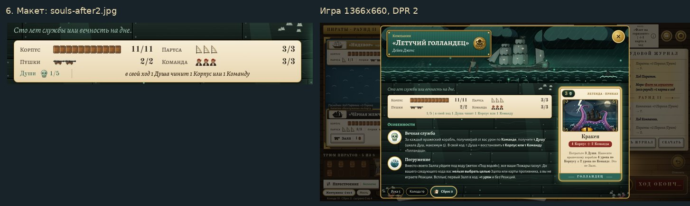
7. Прокрутка коллекции, карта, закреплённые цветные корабли, место арта
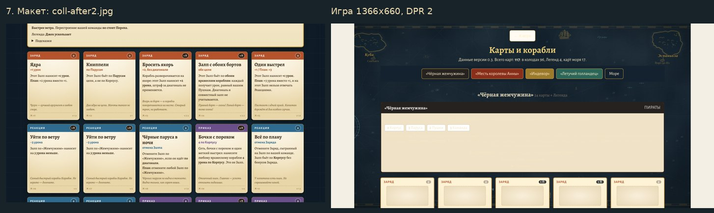
8. Перенос названий и отдельная строка состояния корабля в итогах
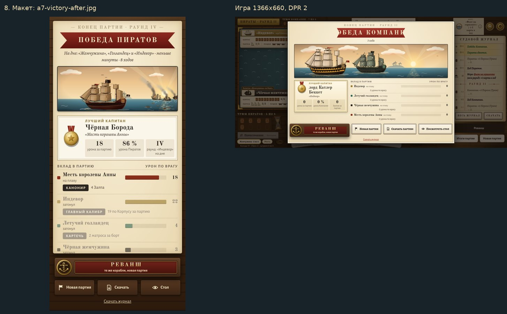
9. Полный свод без служебного введения, раздела сверки sim.py и путей
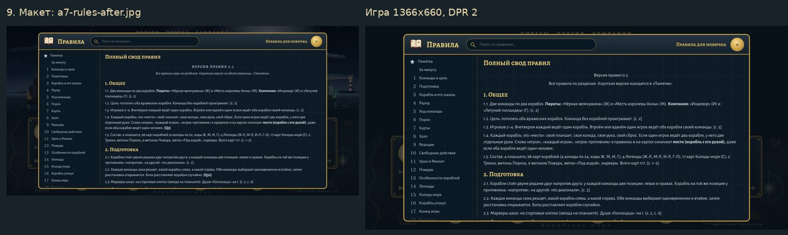
10. Журнал разработчика только с perf=1; читаемая версия
11. Окно создателю на существующем seats.online, ожидание/замена ботом
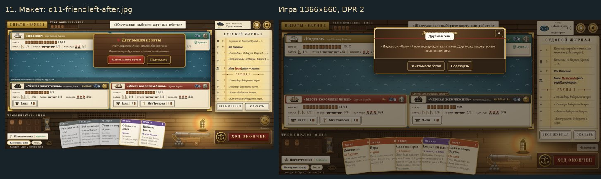
12. Журнал270 логических единиц, шире стол, полные правые кнопки
13. Действия завершённой партии: Реванш / Итоги / Новая партия
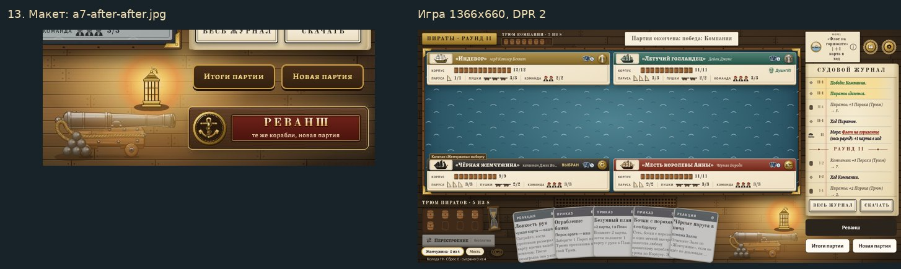
14. Капитанская вкладка над управляемым планшетом
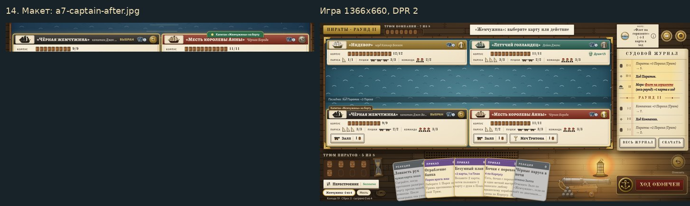
15. Центрированная строка морского клипа, i; краткое название на телефоне
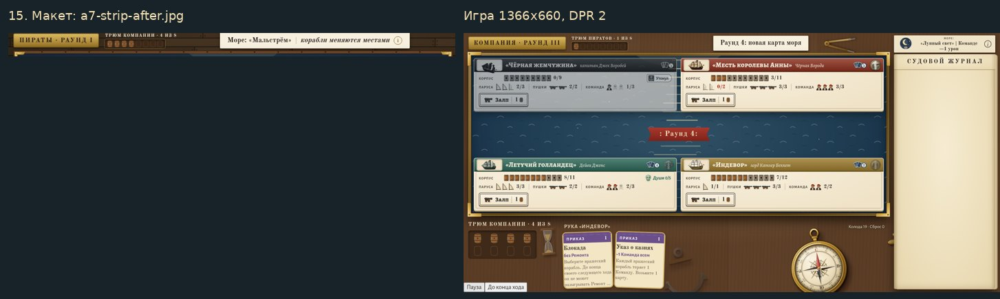
16. История и колода моря вне прокрутки тела, закреплены снизу
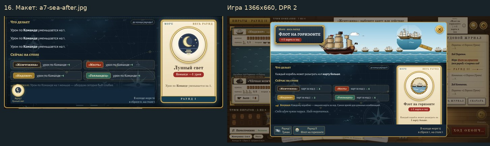
17. Тортуга снизу вместо руки, морская кромка, степперы/итог/действия; общая раскладка выборов моря
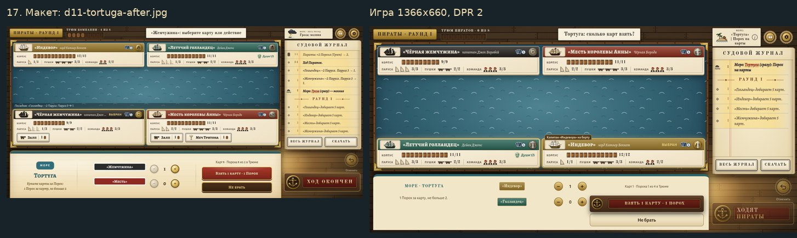
18. Разбор слева, центр моря, ширина236, пергамент/пушка/слагаемые
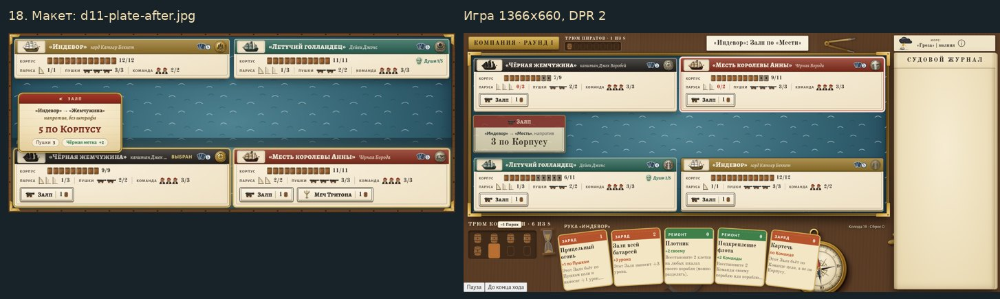
19. Тёмная Отмена над Огонь; исправлена доступная высота Огонь на телефоне
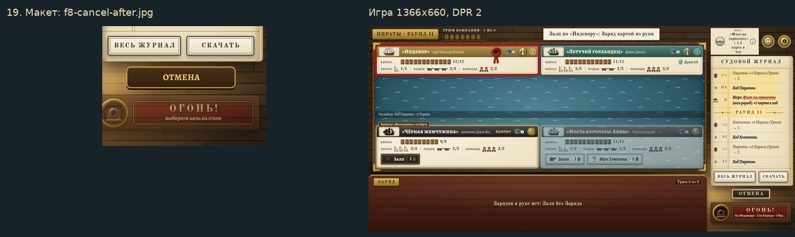
20. Тёмная латунная Пропустить
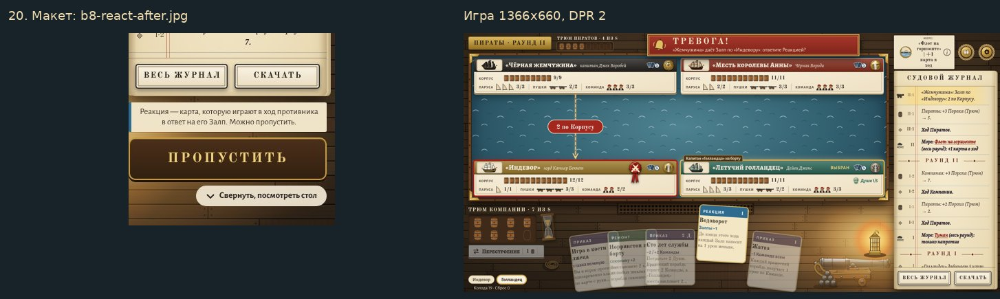
21. Две строки Ход окончен / отменить: N с
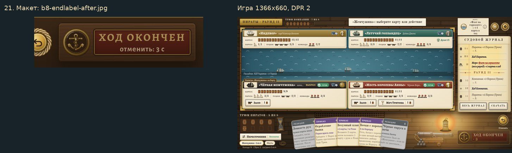
22. Спустить флаг, пощады; флаг и подтверждение вопросом
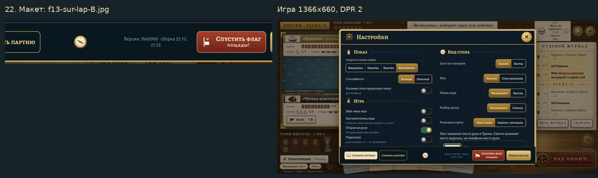
23. Бумажная кнопка скачивания журнала с иконкой
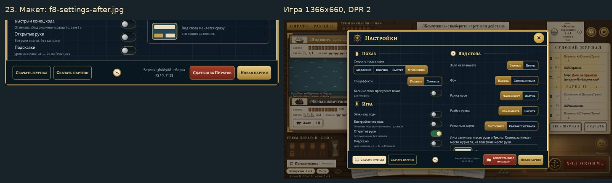
24. Без внутренней жёлтой обводки режимов
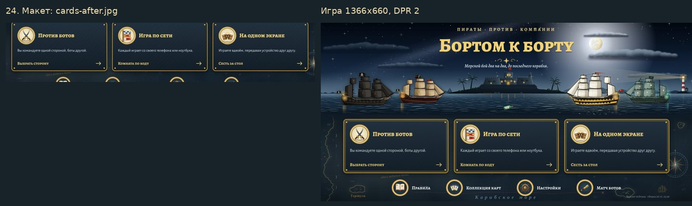
25. В кнопке Души нет +1, значки сохранены
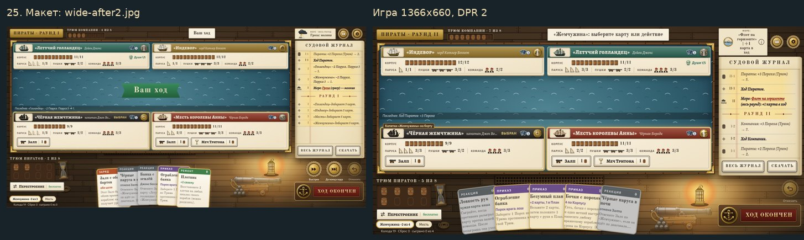
26. Неподвижная область hover; поднимается внутренний рисунок
27. Мальстрём под планшетами и продолжает движение в клипе; simple/reduced исключены
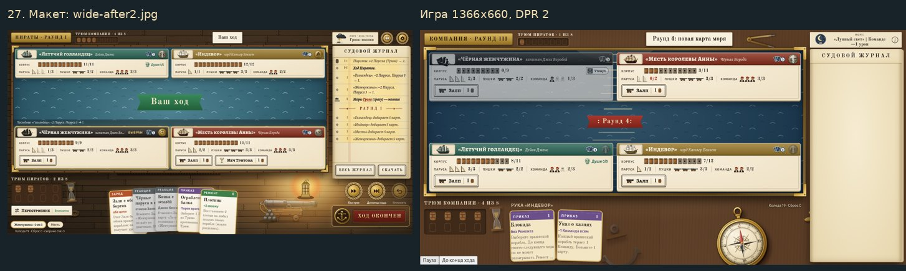
28. Вспышки Залпа/Ответа у дула клетки, без раннего пятна; отдача без filter
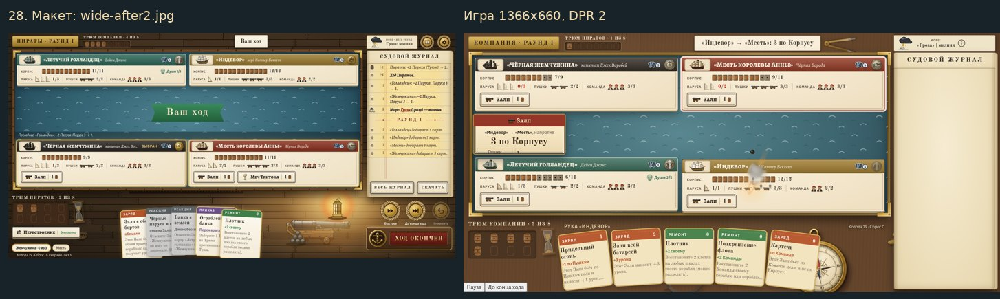
29. Без парусов: молния в море, кольца/брызги, затем подпись
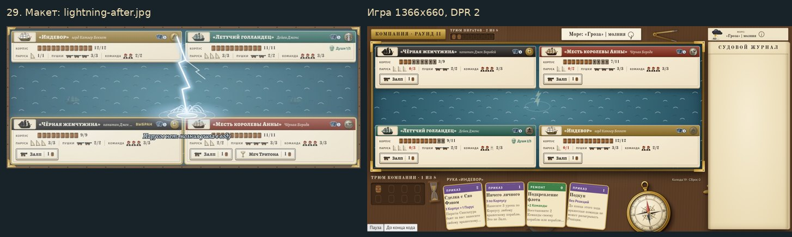
30. Комната: summary скрыт при раскрытии, отдельный низ, одинаковые кнопки мест
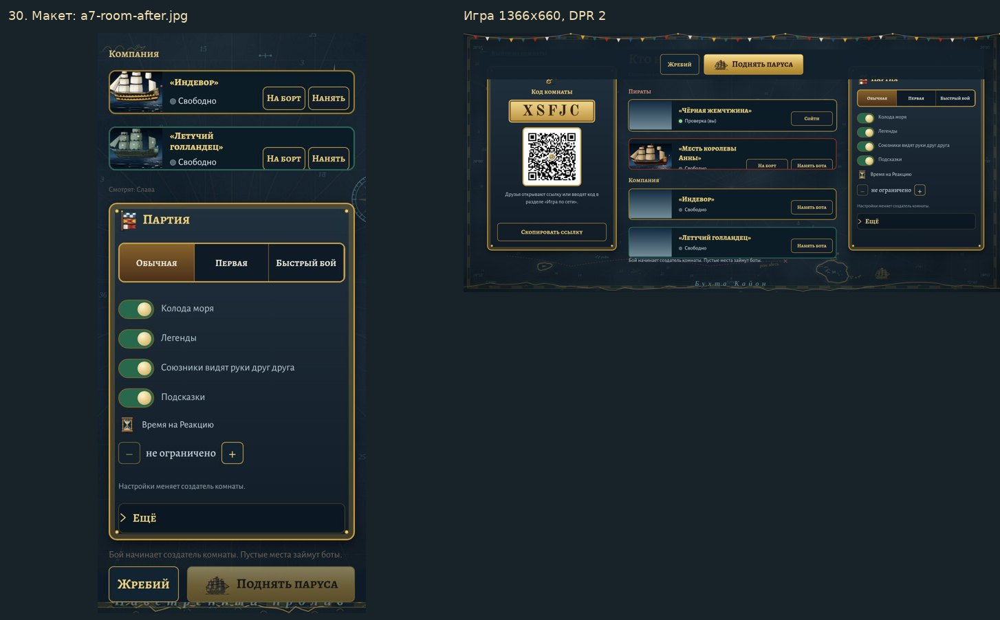
31. Ошибка кода непосредственно под Войти
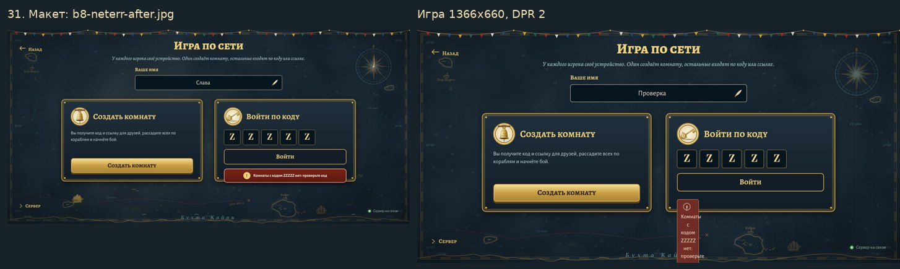
32. Низ подготовки закреплён, поля выше прокручиваются
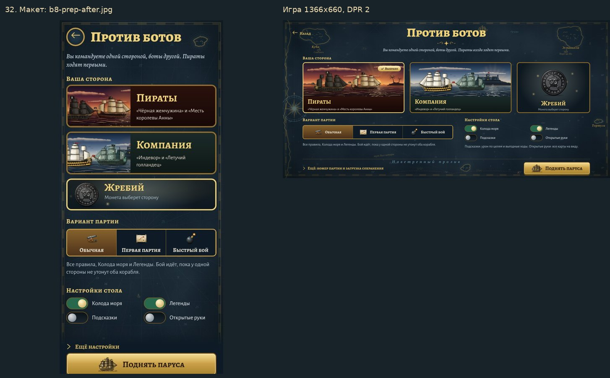
33. Общий экран расстановки, центр шкал/имён, отдельный неподвижный якорь, без кружков канатов
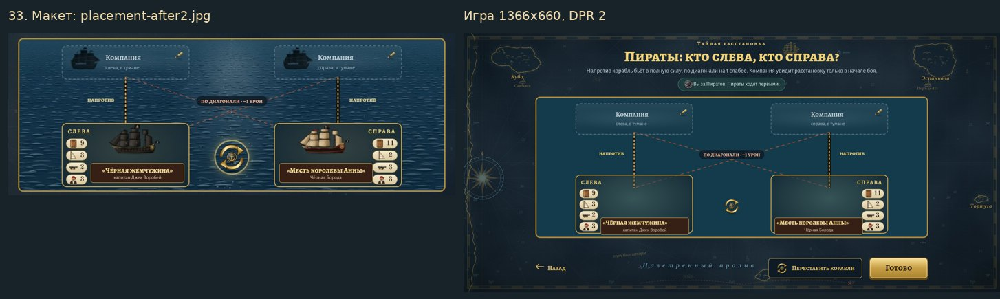
34. Склонения/боты/сброс, длинные тире и видимые служебные английские слова